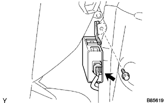

ECU BÁO KHOẢNG CÁCH > LẮP |
| 1. LẮP ECU CẢNH BÁO KHOẢNG CÁCH |
|  |
Lắp giắc nối.
Lắp ECU bằng bu lông.
| 2. TẤM ỐP TRANG TRÍ BÊN TRONG TAI XE SAU PHẢI |
| 3. LẮP TẤM ỐP BẬU CỬA HẬU |
 |
Cài khớp 6 kẹp và 4 vấu để lắp ốp bậu cửa.
| 4. LẮP TẤM ỐP BẬU CỬA SAU PHẢI |
| 5. NỐI CÁP VÀO CỰC ÂM ẮC QUY |
| 6. TIẾN HÀNH THIẾT LẬP BAN ĐẦU |
Tiến hành thiết lập ban đầu (Xem trang Kích chuột vào đây).